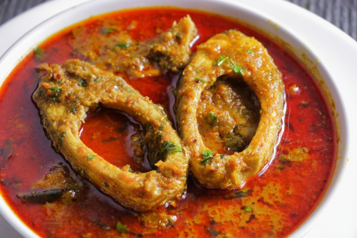

Chepala Pulusu

INGREDIENTS
FOR FISH MASALA POWDER
- 1 tbsp Coriander seeds
- 7 Red chillies
- 1/2 tsp Fenugreek seeds
- 8 - 10 Garlic
FOR THE GRAVY
300 gm Fish pieces
1/2 cup Oil
2 Sprigs Curry Leaves
2 Onions
4 Green Chillies
1 tbsp Ginger Garlic paste
Salt
1/2 tsp Turmeric
1 tbsp Red chillies powder
1 tbsp Coriander powder
1/4 cup Tomato pieces
1/2 liter Water
200 ml Tamarind Juice (extracted from 50 gm of Tamarind)
Coriander Leaves – Small bunch
INSTRUCTIONS
- Fry the masala ingredients on a low flame till they turn aromatic and blend them together and make a fine powder.
- Blend Onions and Green chillies to a fine paste in a mixie jar.
- Add Oil to a pan, add Curry Leaves, Onions and fry until the onions turn golden brown.
- Add Salt and Ginger Garlic paste.
- Now add Turmeric, Coriander Powder, Red Chilli Powder and fry.
- Add Tamarind juice and water and boil the ingredients on a high flame.
- Arrange the fish pieces in this boiling mixture carefully and Lower the flame. Allow it to cook until the oil floats on top.
- In 15 mins, the gravy will thicken and the oil floats on top, now add chopped Coriander Leaves and Masala powder, and stir carefully without disturbing the Fish pieces. Leave it for another 5 minutes, and your tasty Fish Curry is ready to serve.